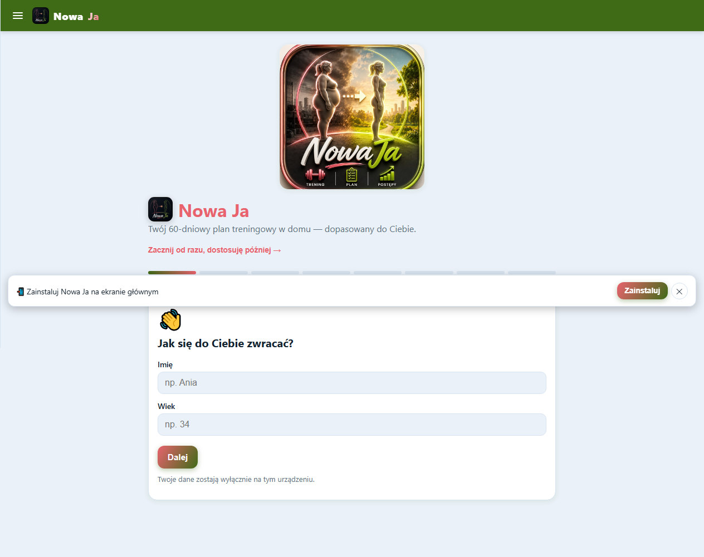
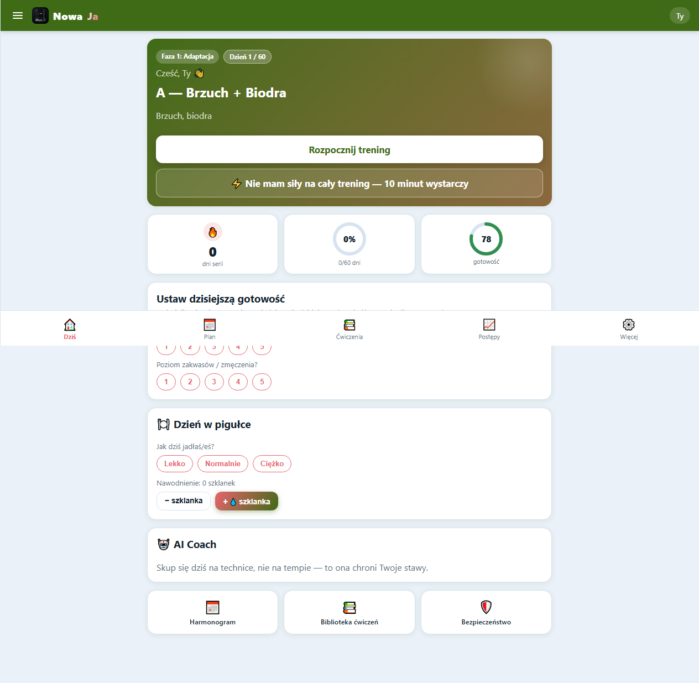
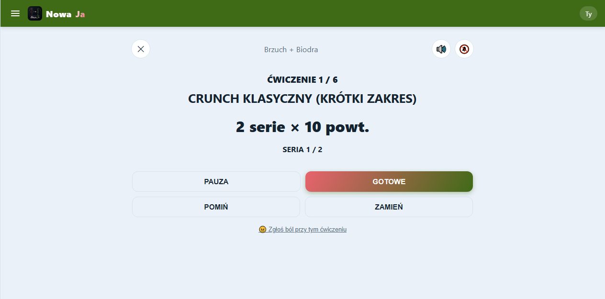
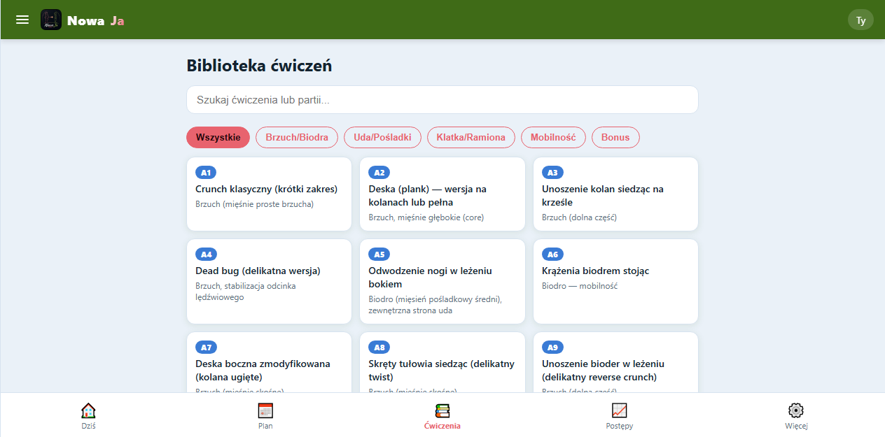
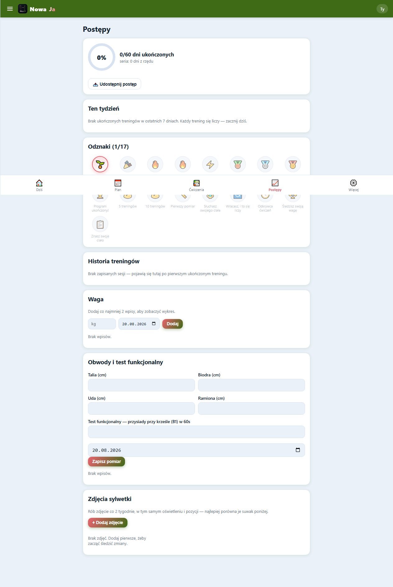

Ostatnia aktualizacja: 20 sierpnia 2026
Otwórz aplikację i odpowiedz na 8 krótkich pytań (imię, wiek, doświadczenie, dostępny czas i sprzęt, ewentualne ograniczenia). Żadne pole nie jest obowiązkowe poza tym, co niezbędne do startu — możesz pominąć resztę i uzupełnić ją później w Profilu.
Jeśli się spieszysz, u góry pierwszego ekranu jest link „Zacznij od razu, dostosuję później” — tworzy profil z sensownymi wartościami domyślnymi i od razu przechodzi do ekranu zgody bezpieczeństwa, który musisz potwierdzić przed pierwszym treningiem.

Pierwszy ekran po otwarciu aplikacji.
To Twój pulpit — pierwsze, co widzisz po otwarciu aplikacji. Pokazuje:
Jeśli nie masz dziś siły na cały trening, użyj przycisku „Nie mam siły na cały trening — 10 minut wystarczy” — uruchamia skróconą, ekspresową wersję dnia, która nadal liczy się do postępu.

Pulpit „Dziś” z kartami statystyk.
Przycisk „Rozpocznij trening” otwiera pełnoekranowy tryb prowadzony krok po kroku: odliczanie przygotowawcze, aktywna faza ćwiczenia, odpoczynek między seriami. Darmowy lektor zapowiada nazwę ćwiczenia i prowadzi odliczanie na głos — możesz go wyłączyć ikoną głośnika w prawym górnym rogu.
W trakcie treningu możesz: zapauzować, pominąć ćwiczenie, zamienić je na inne z tej samej grupy mięśniowej albo zgłosić ból przy konkretnym ćwiczeniu (po dwóch zgłoszeniach tego samego bólu aplikacja sama zaproponuje bezpieczniejszy zamiennik).

Ekran aktywnego ćwiczenia w trybie prowadzonym.
Wszystkie 52 ćwiczenia z opisem, wskazówką bezpieczeństwa i tabelą serii×powtórzeń dla każdej z 4 faz programu. Szukaj po nazwie lub partii mięśniowej, filtruj wg grupy (w tym osobna kategoria „Bonus” dla ćwiczeń z oponą, plecakiem czy skakanką).
Przy niektórych ćwiczeniach (przysiady, pompki, mostek biodrowy, uginanie ramion, wznosy bokiem) dostępny jest też sprawdzian formy przez kamerę — analiza w 100% lokalna, obraz nigdy nie opuszcza urządzenia. To orientacyjna pomoc, nie ocena eksperta.

Biblioteka ćwiczeń z wyszukiwarką i filtrami.
Zakładka „Postępy” pokazuje procent ukończenia programu, serię dni, podsumowanie bieżącego tygodnia, odznaki (zdobyte i te jeszcze do zdobycia), pełną historię sesji oraz miejsce na zapis wagi, obwodów ciała i zdjęć sylwetki — ze suwakiem porównania przed/po.
Po ukończeniu 60. dnia możesz pobrać certyfikat ukończenia programu jako obraz do zapisania lub udostępnienia.

Ekran Postępy: pierścień ukończenia i odznaki.
Na ekranie konkretnego dnia znajdziesz panel „Dostosuj dzisiejszy trening” z szybkimi opcjami: mało czasu, brak sprzętu, ból konkretnej partii ciała — albo po prostu wpisz własnymi słowami, co się dzieje (np. „mam dziś tylko 20 minut”), a aplikacja rozpozna typowe sytuacje i dopasuje trening automatycznie.
Wszystkie dane (profil, historia treningów, zdjęcia) zostają wyłącznie na Twoim urządzeniu — bez konta, bez serwera. W Profilu i ustawieniach możesz: przełączać się między kilkoma profilami na jednym urządzeniu, eksportować lub importować kopię danych do pliku oraz zresetować postęp wybranego profilu.
Więcej szczegółów: Polityka prywatności.